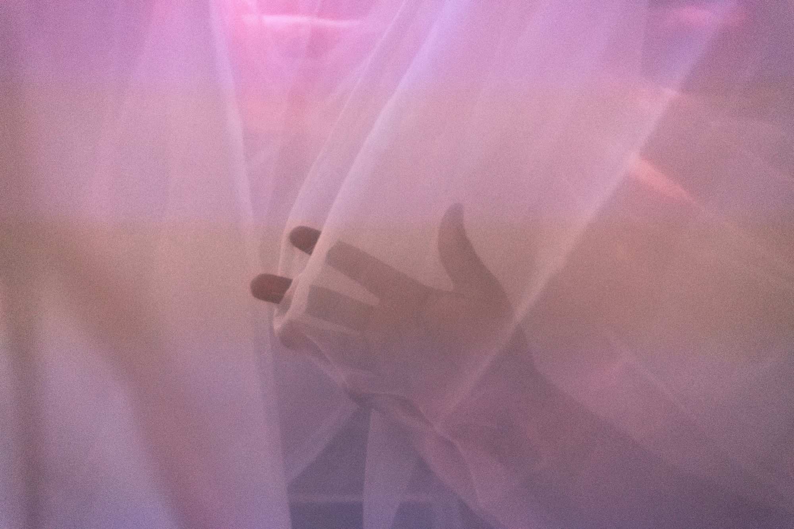
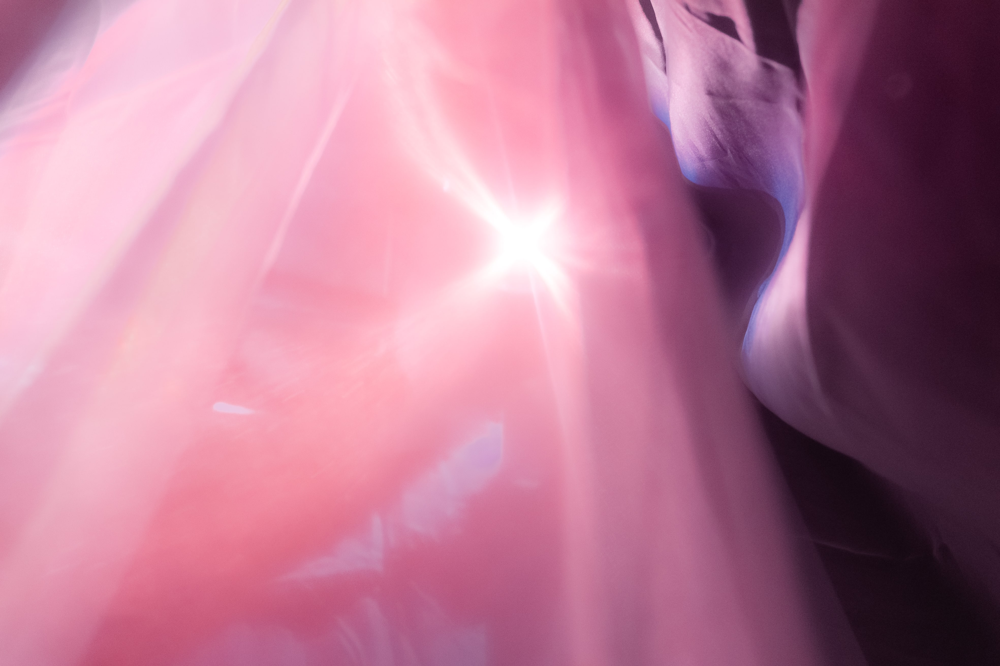
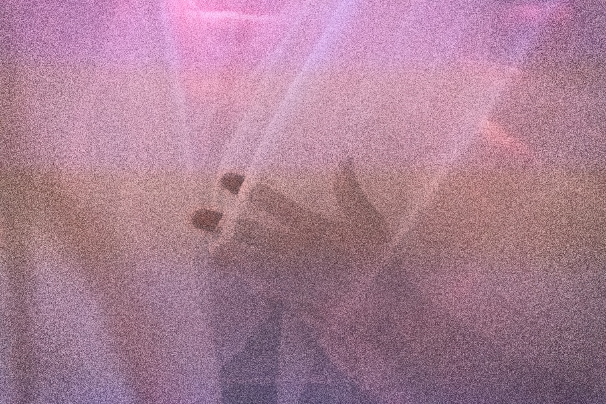
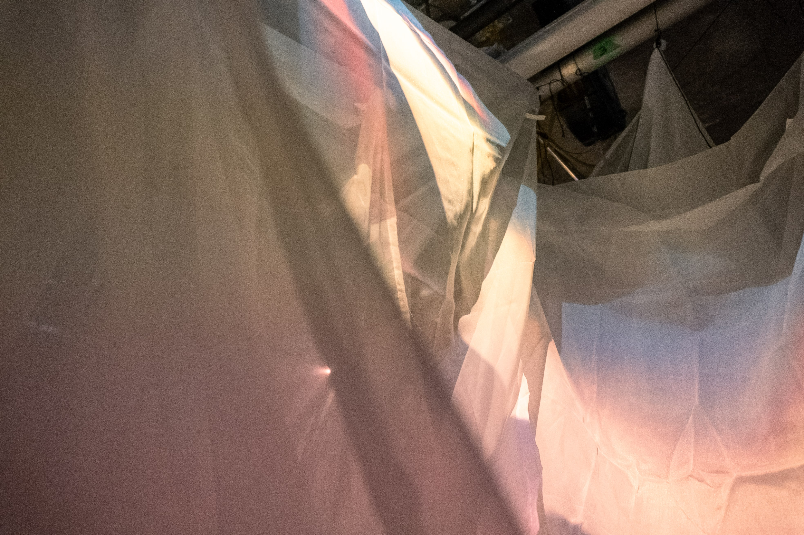
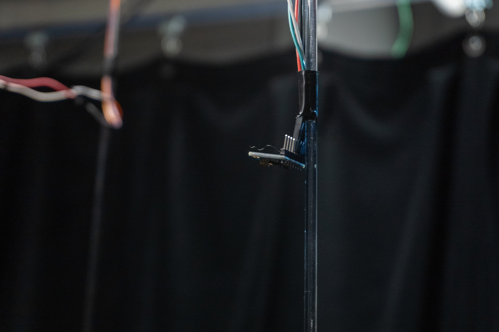
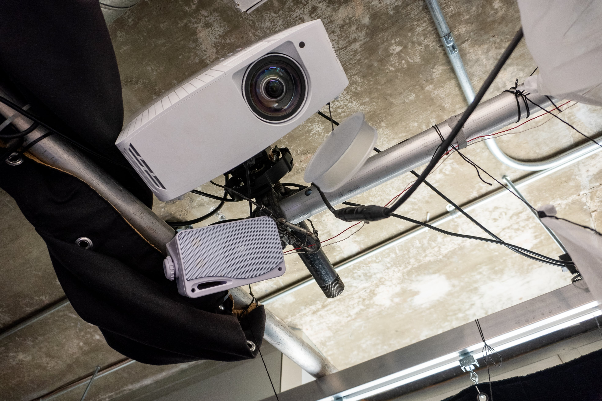
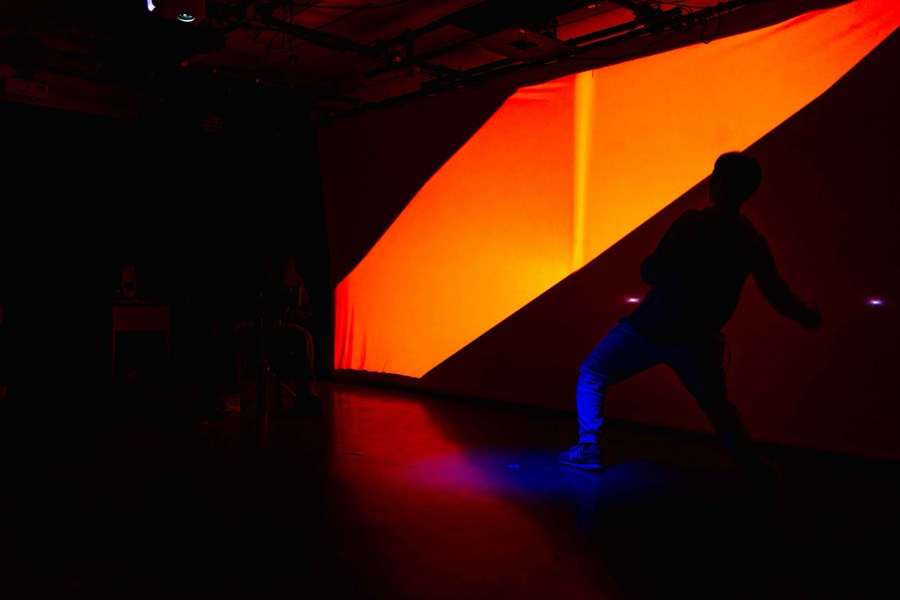

Installations interactives
(19/21)
"Impressions" est une installation interactive Conceptulisé et créé par
Jean-Christophe Zephir et Meryem Berbiche et Dominic Roberts
Cette installation interactive invite les spectateurs à explorer un dialogue unique entre l'humain et la
technologie. Les spectateurs interagissent avec des batons transparents suspendues au plafond en entrant
en collision avec ces-dernières. Ces collisions activent des capteurs. Ces interactions déclenchent à la
fois des effets sonores immersifs et embellissent l'atmosphère visuelle de l'espace. Les lumières, bien
qu'elles ne jouent pas un rôle central dans l'interaction, ajoutent une couche d'ambiance à travers des
motifs simples projetés sur les rideaux accrochés au plafond. Ces jeux de lumière contribuent à créer un
cadre visuel enveloppant, tout en restant discrets pour ne pas distraire de l'expérience sensorielle
principale.
Technologiquement, l'installation utilise des capteurs gyroscopiques et des capteurs de vibrations pour
détecter les mouvements des spectateurs, accompagnés d'un système sonore surround génératif. Ce son,
diffusé via un ensemble de haut-parleurs placés tout autour de l'espace, réagit en temps réel aux gestes
des visiteurs, offrant une ambiance sonore ambisonique et unique à chaque interaction. Le son et la
lumière, bien que complémentaires, servent principalement à renforcer l’immersion dans l'espace sans
détourner l’attention de l'élément central : les batons transparents.
L'intention de l'œuvre est de permettre aux visiteurs de devenir des co-créateurs, interagissant
physiquement avec l'installation pour influencer l'ambiance sonore et spatiale. En touchant les batons
transparents, ils déclenchent des effets qui transforment subtilement leur environnement immédiat,
créant un lien presque organique entre eux et la technologie qui les entoure.
VidéoImpressions
Images8 photos





